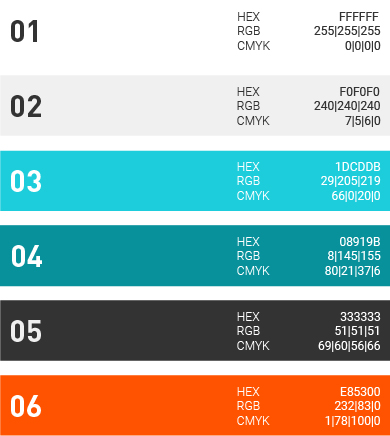
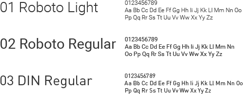
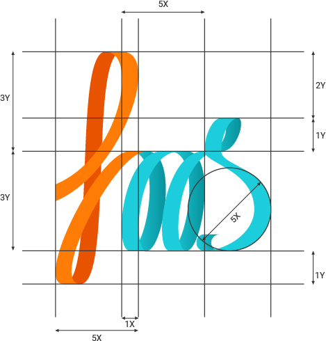
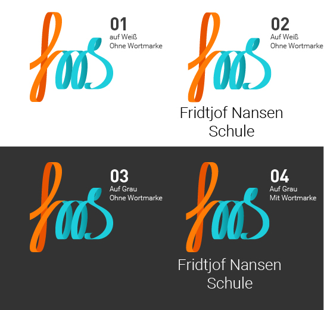
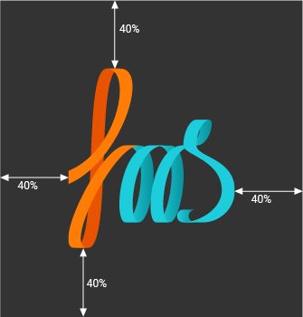

Farben
In sämtlichen Kommunikationsmitteln sollten
Außschließlich die Voranstehenden Farben
vorkommen. Die Farben sollen Sparsam mit Augenmerk
auf genügend Weißraum verwendet werden,
um eine helle und saubere Gesamtwirkung
beizubehalten.
Die Farbpalette spiegelt den fortschrittliche
Lehransatz der Fritjof-Nansen-Schule und ihre
Werte wieder. Cyan und Türkis Vermitteln ein
Gefühl von Ruhe Ordnung und frische, während
Weiß und Grau die Nötige Ernsthatigkeit
und strenge mit sich bringen. Die Orangene
Komplementärfarbe ist als Sekundärfarbe
zu verstehen und sollte sparsam eingesetzt
werden.
Kommunikationsmittel wie z.B. Broschüren
und die Schulwebseite transportieren über
diese Farben ein Gefühl von Frische und
Modernität - Werte, die sich in der Schulphilosophie
und in der Art des Unterrichts der FNS
wiederfinden.
Durch die Beschränkung aller Kommunikationsmittel
auf außschließlich diese Farbpalette,
ist ein langfristig einheitlicher Öffentlichkeitsauftritt
der Schule gewährleistet.

Hausschrift
Die Hausschrift der FNS ist die „Roboto“ aus
der Familie der Groteskschriften. Als Akzentschrift
für Überschriften fiel die Wahl auf einen
„DIN“ - Schriftschnitt. Es werden ausschließlich
die „Roboto Light“, die „Roboto Regular“
und die „DIN Regular“ verwendet.
So stehen drei verschieden schwere
Schriftschnitte zur Verfügung, die für gestalterische
Abwechslung sorgen.
Die Ausgewählten Schriften bieten klare Linien,
die zu einem sauberen und geordneten
Gesamtbild führen, ohne dabei zu stringent zu
wirken.
Fließtext wird in der „Roboto Light“ und nach
Möglichkeit zwei- bis dreizeilig gesetzt. Überschriften
vorzugsweise in der „DIN Regular“ in
Versalien.
Auf hellem Hintergrund wird Schrift in der
Farbe 04 gesetzt, auf dunklem Hintergrund in
der Farbe 01.

Logo
Das neue Logo der FNS bietet einen interessanten
Kontrast, zu den geraden Linien der
sonstigen Gestaltung und lockert das Gesamtkonzept
des Designs auf .
Die geschwungene Schreibschrift erinnert an
Schule und Unterricht, wurde aber spielerisch
in Szene gesetzt, um dem Thema Schule eine
gewisse Leichtigkeit und Dreidimensionalität
zu geben. Das fortschrittliche Schulkonzept
und der freundliche Charakter der Schule soll
bereits am Logo erkennbar sein.
Für eine stimmiges Gesamtbild wurde das
Logo an einem Raster ausgerichtet, welches
auf der Fibonaccifolge basiert. Einzelne Logoelemente
stehen also im Verhältnis von 1:2:3:5
zu einander.

Das Logo kann auf Weiß, oder auf einem dunklen
Grau stehen.
Außerdem, kann zusätzlich zum Logo die
Wortmarke „Fridtjof Nansen Schule“ verwendet
werden.

Das Logo sollte mit einem Abstand von mindestens
40% seiner Breite von Rändern entfernt
platziert werden.
